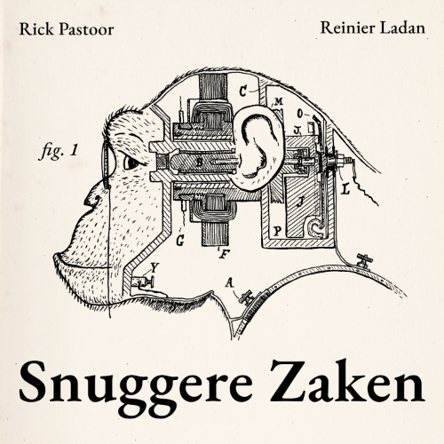

Snuggere Zaken
Snuggere Zaken is een wekelijkse podcast waarin Rick Pastoor en Reinier Ladan een onderwerp bespreken waar iedereen snuggerder van wordt. Van het omgaan met je angsten tot het omzetten van je user stories naar job stories. Alles wat een moderne kenniswerker nodig heeft om succesvol haar werk te kunnen doen.
Hosted in de EU.